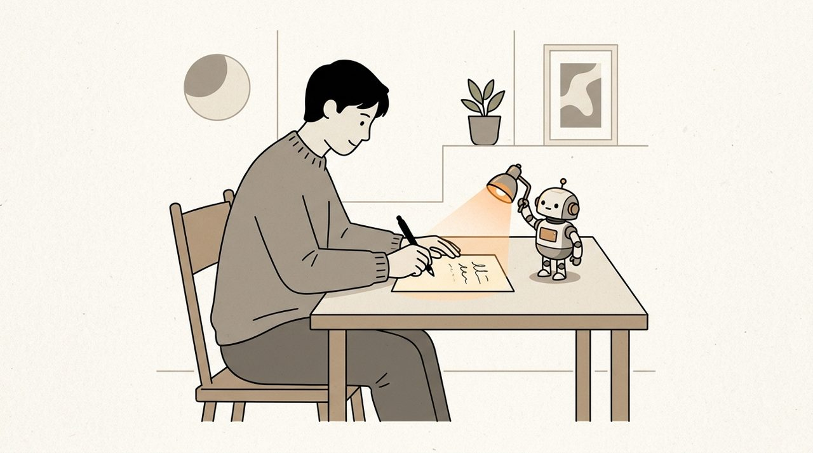

记下来了，用的是你的原话，写进了 writing/思考是人类的事情.md。顺手改了几个语音同音字：「逮捕」→「待补」，「Cloud」→「Claude」。
有两处你还没说清，标了【待补】：章鱼血为什么是蓝的；你写 PR 那一刻具体在想什么。
我好久没真正自己思考写东西了。现在很多时候，是想一句话，然后让 AI 帮我把一篇文章写出来。
今天写 PR 的时候不一样。我得真的去想，为什么要这样写。写完以后我有一种感觉：这个问题，我被思考过了。【待补：写到哪一句时发现想法变了】
观点得是我的，无论它多偏激。AI 可以帮我润色、帮我查东西、问我问题，让我继续想。
还有一种是让 AI 告诉我一些我不知道的事。它说章鱼有三个心脏，血是蓝的。我接着问为什么。【待补：章鱼血为什么是蓝的】

手机。入口同样在左下角的加号；阶段条收成一个阶段名，点开是阶段列表；正文全屏编辑，用输入法自己的语音输入。
今天写 PR 的时候不一样。我得真的去想，为什么要这样写。写完以后我有一种感觉：这个问题，我被思考过了。【待补：写到哪一句时发现想法变了】